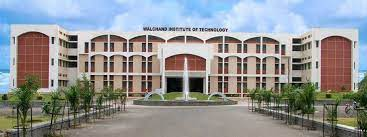

Walchand Institute of Technology, one of the pioneering self financed Institution in engineering education & research was established in 1983 by SAPDJ Pathshala Trust ( Estb. 1885). LEARN FROM HIGHLY EXPERIENCED FACULTY Our faculty are selected on the basis of proven success and expertise. They are among the best in their respective fields. You will learn from a multinational community of recognized scholars and experts
BENEFIT FROM OUR MULTINATIONAL CAREER ADVANCEMENT SERVICES Whether you’re looking to advance your career in India or abroad, change your career path or start your own business, our Professional Readiness Program, multinational career services
